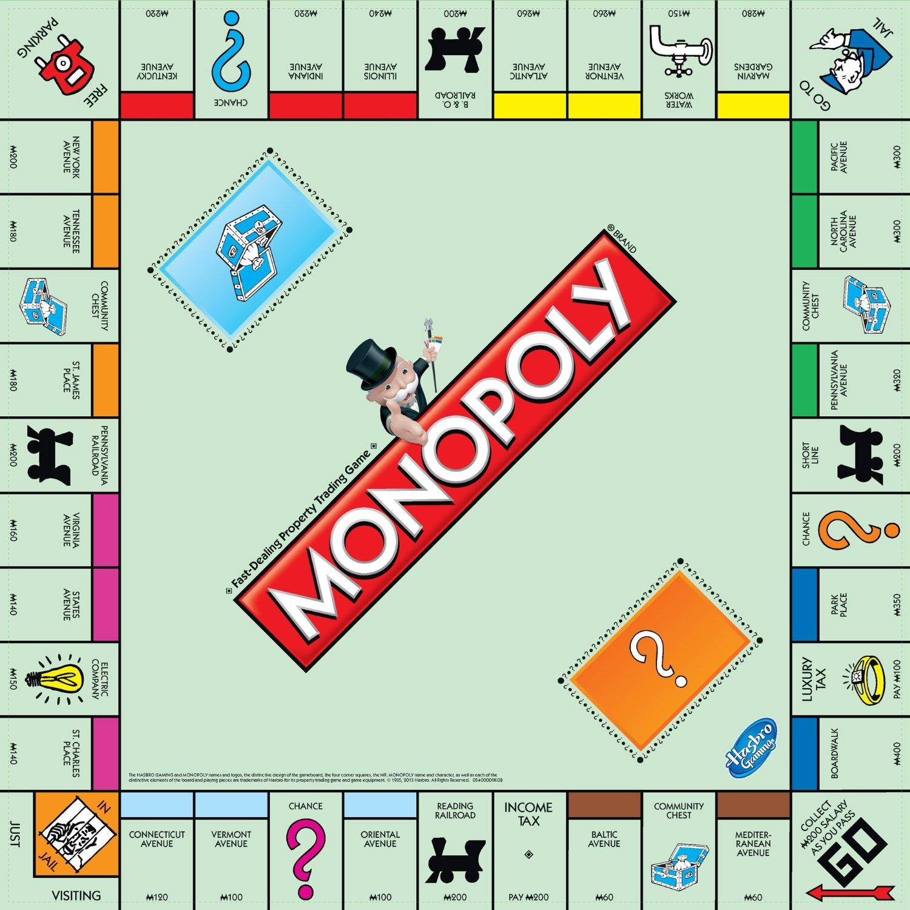
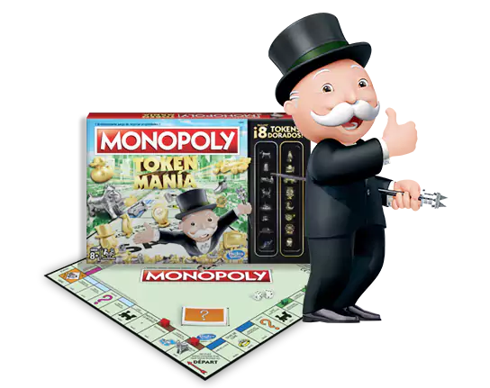

El juego de mesa más vendido de la historia
Un juego creado con la función de servir como herramienta para enseñar las teorías acerca de la justicia social y económica extraídas del estudio titulado "Progreso y miseria" de Henry George.
Comercializado por vez primera en el año 1936.
A lo largo de 80 años, el juego ha sufrido una notable evolución. Sus múltiples ediciones y sus tantas versiones han dado pie a que se cambiara desde la caja que lo contiene hasta los elementos que lo componen, logrando, así, mantenerse como el favorito a través de las décadas.
Con los años, la finalidad del juego cambió para sólo distrufar un buen rato, negociando propiedades y hasta haciendo uso de medios electrónicos para todas las transacciones que requiere el juego.
Con información de Gràffica.info, cultura visual